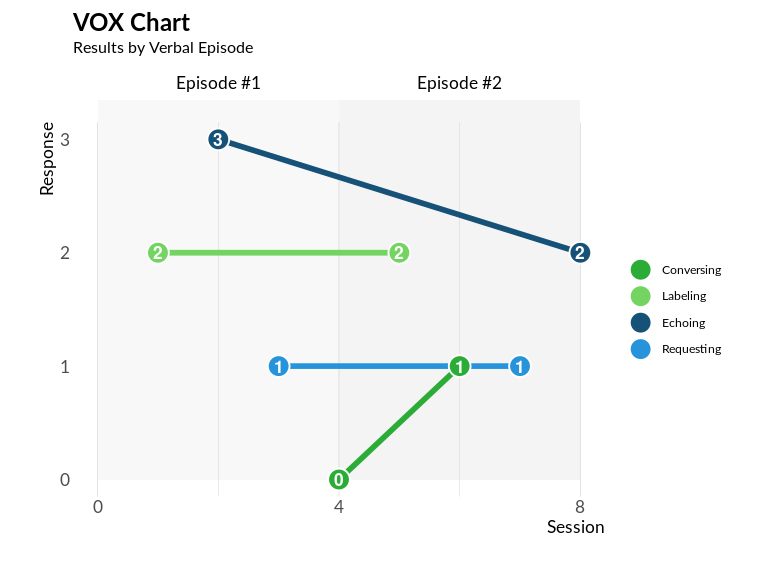

VOX Analysis Application & Package
The voxanalysis package enables behavioral specialists to generate detailed reports and analyses using the VOX Analysis framework, which was designed to assess language development in individuals with autism.
Austism and the VOX Analysis
Autism spectrum disorder often presents unique language development patterns.
For example, an individual with autism may excel at making requests but struggle with responding to questions, whereas neurotypical individuals tend to develop these skills more evenly.
Using the VOX Analysis Framework, the listener (i.e., the clinician) can elicit verbal responses from the speaker (i.e., the patient) through structured play-based interactions.
However, documenting these interactions alone does not lead to a conclusive diagnosis.
Using the voxanalysis package, behavioral analysts can analyze evaluation data to generate comprehensive reports, complete with data visualizations and variance measures, offering insight into the speaker’s language skills.
Developed by Dr. Lee Mason and Dr. Alonzo Andrews, co-founders of Shapers at Work, voxanalysis is grounded in their expertise in verbal behavior and autism assessment. Shapers at Work is a consulting firm dedicated to training specialists in behavioral analysis and autism diagnosis.
(Read more on the VOX Analysis process here.)

Enterprise Deployment
Any R user can download and run the app using the voxanalysis package. However, many clinics and behavioral specialists may not be familiar with R. We recommending contacting either taylor.rodgers@freestateanalytics.com or leemason@gmail.com for help deploying or using application.
Installation
A user can install voxanalysis with:
devtools::install_github("Free-State-Analytics/voxanalysis", ref = "dev")Running Reports
An R user can generate the interactive VOX Analysis Application with the following:
voxanalysis::run_app()For more experienced R users, they can generate an MS Word report wih the following:
# Load package
library(voxanalysis)
# Load example data for report generation
data("df_input_speaker_info_example")
data("df_input_response_example")
# Generate a Word document report
util_generate_word_doc_report(
df_input_speaker_info = df_input_speaker_info_example,
df_input_response = df_input_response_example,
file_name = "text.docx"
)To learn more about report generation, refer to the How to Generate Reports guide.
Generate Individual Data Visualizations and Calculations
Advanced R users can use the individual functions within voxanalysis for data visualizations and calculations. These components are designed to allow flexible analysis beyond the main VOX Analysis Application.
For example, a line chart that tracks language skill balance over verbal episodes can be generated with:
library(voxanalysis)
# Load example data
data("df_input_response_example")
# Generate a VOX line chart across verbal episodes
plot_vox_line(
df_input_response = df_input_response_example,
ind_hide_heading = FALSE
)
For more details on available visualization and metric functions, see VOX Visualizations and Metrics.
Advanced R users should also familiarize themselves with the data model to use these functions appropriately.
About the Team
The voxanalysis package was developed by Lee Mason, Alonzo Andrews, and Taylor Rodgers. It was a partnership between their respective companies, Shapers at Work and Free State Analytics.
Lee Mason, PhD, BCBA-D, LBA-TX - VOX Analysis Researcher
Dr. Lee Mason is an Applied Behavior Analyst at Cook Children’s Health Care System and an Associate Professor of Medical Education at the Burnett School of Medicine, Texas Christian University. With over two decades of experience, he has worked in a variety of settings, including recreational, residential, educational, and clinical environments, supporting individuals with disabilities.
Dr. Mason earned his special education teaching certificate from Stephen F. Austin State University in 2004 and began his teaching career in rural East Texas public schools. He later earned a PhD in Education from Utah State University. His dissertation, A Behavioral Phenomenological Investigation of Multi-User Virtual Learning Environments, was awarded the Outstanding Paper honor by the Society for Information Technology and Teacher Education.
Dr. Mason was on the faculty at the University of Texas at San Antonio (UTSA) for eight years, where he taught courses on evidence-based practices for students with autism. In 2013, he founded the UTSA Autism Research Center, which received an Exemplary Program Award from the American Council on Rural Special Education. His research on language assessment and intervention for children with autism from diverse cultural and linguistic backgrounds earned him the President’s Distinguished Diversity Award at UTSA.
Alonzo Andrews, PhD, BCBA, LBA-TX - VOX Analysis Researcher
Dr. Alonzo Andrews served as the director of the Autism Treatment Center in San Antonio for 24 years, where he led the delivery of behavioral services for individuals with autism spectrum disorders. His work included developing residential programs for children and adults, operating a state-certified private school, and providing outpatient rehabilitation therapies. Currently, he provides behavioral consultation for a school district in San Antonio and has been teaching courses at the University of Texas at San Antonio since 2013.
Alonzo has co-authored numerous publications in esteemed journals, including The Journal of Autism and Developmental Disorders, The Analysis of Verbal Behavior, and Behavior Analysis in Practice. His clinical interests span a wide range of innovative projects, such as biomedical interventions, video modeling, remote functional assessments, autism-friendly architectural design, and challenging behavior interventions. He has also worked on developing a computer-simulation training program for caregivers of children with autism, reflecting his commitment to advancing both research and practical applications in the field.
Taylor Rodgers, MS - Project Manager & Package Developer
Taylor Rodgers is an analytics product developer and founder of Free State Analytics.
Taylor has worked as a data scientist in a variety of industries ranging from IT development, health care, senior living, marketing, and manufacturing.
Taylor enjoys writing, statistics, programming, and learning about a variety of subjects. This has given him a unique opportunity to translate complexity into clarity with data related projects, as well as being a reliable project manager where communication skills are paramount.
Taylor has written two data science books, Data Work: A Jargon-Free Guide to Managing Successful Data Teams and R Programming in Plain English.
Taylor earned his Masters in Applied Statistics from the University of Kansas Medical School and his Bachelors of Arts in Economics from the University of Kansas.
Training and Consulting Services
VOX Analysis Training: Behavioral specialists can contact Lee Mason (leemason@gmail.com) for training on using the VOX Analysis framework.
VOX Analysis Setup & Support: For assistance with setup or customization of the VOX Analysis Application, contact Taylor Rodgers (taylor.rodgers@freestateanalytics.com).